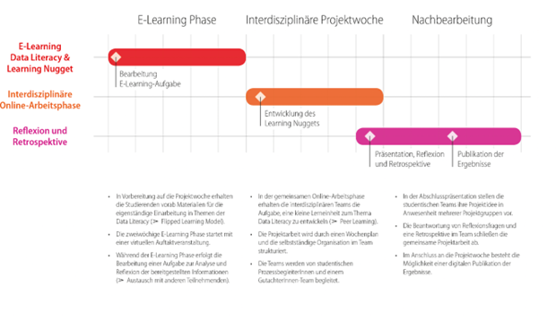

DaLI Interdisziplinäre Projektwoche
Ein projektbasiertes Lernszenario zum Erwerb von Data Literacy durch Peer-Learning
Toolbeschreibung
Studierende nutzen und generieren in ihrem Alltag und Studium regelmäßig Daten, gehen mit digitalen Medien um, führen Internetrecherchen durch und setzen cloudbasierte Software und Social Media ein. Dabei wenden sie Data Literacy beiläufig auf einem rudimentären Level an. Grundlegende Kenntnisse sowie praxisorientierte Kompetenzen in höheren Leveln sind für gewöhnlich nicht vorhanden und je nach Studiengang auch nicht im Fokus (vgl. Schüller et al., 2019: 28; Bandtel et al., 2021: 408).
Aufgrund des umfangreichen Themas und der vielfältigen Kompetenzfelder zum Erwerb von Data Literacy (vgl. Schüller et al., 2019) ist es wesentlich, neben herkömmlichen Kursen zur Aneignung grundlegender Datenkompetenzen auch Lernräume zu gestalten, in denen Studierende Aspekte der Data Literacy selbstständig identifizieren, anwenden und so den kompetenten Umgang mit Daten erlernen können (vgl. Ridsdale et al., 2015: 22). Projektbasierte Lehrveranstaltungen wie die DaLI Interdisziplinäre Projektwoche ermöglichen eine handlungsorientierte und reflektierte Erarbeitung von Datenkompetenz (Heidrich et al., 2018; Wildt, 2005). In solchen Lehrveranstaltungen kann Data Literacy interdisziplinär und praxisorientiert erworben, können lebensnahe Fragestellungen behandelt und kann eine kritische Betrachtung ermöglicht werden (vgl. Bandtel et al., 2021: 399). Die zusätzliche Einbindung von Peer-Learning kann im Sinne des „Learning from and with each other“ zu einer reflektierten Auseinandersetzung mit den Inhalten führen und das gemeinsame Lernen unterstützen (Boud et al., 2001).
Die DaLI Interdisziplinäre Projektwoche soll als ein Baustein in den curricularen Aktivitäten der Data-Literacy-Initiative1 dazu beitragen, Studierenden zu ermöglichen, ein tieferes Verständnis für einen selbst ausgewählten Aspekt von Data Literacy zu entwickeln, indem sie in einem selbstgesteuerten Lernsetting gemeinsam ein Learning Nugget2 für andere Studierende inhaltlich aufbereiten, gestalten und bereitstellen.
Es können sich folgende Vorteile ergeben:
- Theorien und Modelle von Data Literacy werden in einen realen Kontext überführt.
- Selbstgesteuerte Auseinandersetzung mit bestimmten Aspekten der Data Literacy durch die Aufbereitung der Learning Nuggets für andere Studierende.
- Reflektierte Auseinandersetzung mit der eigenen fachbezogenen Sicht auf Data Literacy durch die Aufgabenstellung und Arbeit in einem interdisziplinären Team.
- Entwicklung von Kommunikations- und Kollaborationskompetenzen zur Durchführung von Projekten in interdisziplinären Teams.
- Erweiterung der Selbstlernkompetenzen sowie der eigenverantwortlichen Lernprozesssteuerung in Projekten.
- Schulung der Präsentationskompetenzen und Reflexion des eigenen Lernprozesses.
Voraussetzungen & Zielgruppen
Das von DaLI entwickelte modulare Programm zum Erwerb von Data Literacy zielt auf die disziplinübergreifende Entwicklung von Datenkompetenz für Studierende aller Fachrichtungen an der TH Köln ab. Die DaLI Interdisziplinäre Projektwoche ist eine Veranstaltung im DaLI-Basislevel3 , die einen Einblick in alle Aspekte der Data Literacy ermöglicht. Gemäß den Leitlinien der TH Köln, in denen Interdisziplinarität bei der Weiterentwicklung der Bachelor- und Masterstudiengänge ein wesentlicher Aspekt ist (TH Köln, 2018), findet sie während der hochschulweiten Projektwoche statt und ist offen für alle Studierenden der TH Köln, unabhängig von dem Semester, den Vorkenntnissen oder der Fakultät.
Kompetenzen
Die Studierenden sollen im Rahmen der Projektwoche ein Learning Nugget für einen Peer-Learning-Ansatz konzipieren und entwickeln. Dabei arbeiten sie besonders in der Onlineprojektphase gemeinsam im Team, recherchieren, identifizieren einen für sie wesentlichen Aspekt von Data Literacy und bereiten diesen für ihre Learning Nuggets auf. Sie setzen sich dafür mit dem gesamten Spektrum grundlegender Datenkompetenzen auseinander und erarbeiten und reflektieren Inhalte zur Datenkultur, zum Datenschutz und zur Datenethik sowie zu den Kompetenzbereichen: Daten bereitstellen, managen, auswerten, interpretieren, einordnen und publizieren. Die Studierenden gestalten selbstständig die Methoden, Inhalte und Interaktionen des Lernsettings. Abschließend präsentieren sie ihre Ergebnisse vor einem Plenum und diskutieren diese mit ihren Peers und Fachgutachter:innen. Die DaLI-Projektwoche zielt sowohl auf den Erwerb von reflektierten und praxisorientierten Data-Literacy-Kompetenzen als auch auf Kompetenzen zum projektbasierten Arbeiten in interdisziplinären Teams ab.
Lerninhalte & Methoden
Die DaLI Interdisziplinäre Projektwoche wird im Flipped-Classroom-Format mit Studierenden aus unterschiedlichen Fakultäten und Semestern in zwei Phasen durchgeführt: einer zweiwöchigen E-Learning-Phase und einer daran anschließenden einwöchigen gemeinsamen Onlineprojektphase.
In Vorbereitung auf die Projektphase erhalten die Studierenden vorab Materialien zum Thema Data Literacy. Für die Erarbeitung haben die Studierenden zwei Wochen Zeit. Zum Abschluss dieser E-Learning-Phase erfolgt die Bearbeitung einer Aufgabe zur Analyse und Reflexion der bereitgestellten Informationen aus Sicht der eigenen Fachdisziplin. Ihre Reflexion veröffentlichen sie auf einer gemeinsamen Social-Learning-Plattform, den THspaces4 , wo sie Peer-Feedback von anderen Studierenden ihrer Projektgruppe erhalten.
Nach der zweiwöchigen E-Learning-Phase folgt die gemeinsame Onlinearbeitsphase in der Projektwoche. Die Studierenden werden in Gruppen von fünf bis acht Personen interdisziplinär aufgeteilt. Die Gruppen werden während dieser Zeit von studentischen Prozessbegleiter:innen und einem interdisziplinären Gutachter:innenteam, bestehend aus zwei Lehrenden, begleitet. Ein Wochenplan strukturiert die gemeinsame Projektarbeit mit Terminen für Daily Standups5 und fachlichem Feedback sowie der Abschlusspräsentation.
In der gemeinsamen Onlineprojektphase ist die Aufgabe, ein Learning Nugget zu einem Aspekt der Data Literacy zu entwickeln. In der Projektidee soll das methodische und inhaltliche Know-how der unterschiedlichen Fachdisziplinen zusammenfließen, um daraus einen gemeinsamen Teilaspekt von Data Literacy in einer kleinen interdisziplinären Lerneinheit für weitere Studierende umzusetzen. Die Entwicklung eines Learning Nuggets für andere Studierende knüpft an die eigene Lebensrealität der Studierenden an und soll zu einer tieferen Auseinandersetzung mit dem Gelernten führen.
Die Studierenden stellen am Ende der Projektwoche ihr Learning Nugget online ihrem Gutachter:innenteam sowie anderen Studierendengruppen vor und diskutieren dieses. Für ausgewählte Konzepte beziehungsweise fertiggestellte Learning Nuggets besteht im Nachgang die Möglichkeit einer Veröffentlichung als OER6 -lizenzierte Lehr-Lern-Einheit.

Erkenntnisse & Erfahrungen
Die DaLI Interdisziplinäre Projektwoche wurde bereits zweimal durchgeführt und im Anschluss evaluiert. Die Möglichkeit, sich zwei Wochen im Selbststudium zeit- und ortsunabhängig mit den Inhalten vorab auseinanderzusetzen, und die einwöchige gemeinsame Onlineprojektphase helfen, curriculare Barrieren zu überwinden und eine interdisziplinäre Wissensbasis zu Data Literacy zu bilden. Es zeigte sich, dass das Flipped-Classroom-Format die Studierenden in ihrem Projektverlauf unterstützt. Durchschnittlich 75 Prozent der Studierenden stimmten in den Befragungen im Sommersemester 2021 und 2022 zu, dass die Materialien in der E-Learning-Phase ihnen geholfen haben, ein Verständnis für Data Literacy zu entwickeln, und sie durch das Projekt Kernaspekte von Data Literacy identifizieren konnten. Eine ähnliche Anzahl bestätigte, ein tieferes Verständnis für Data Literacy aus einer interdisziplinären Perspektive entwickelt zu haben. Zudem gab die Mehrheit der Teilnehmenden an, eine Vorstellung von Projektarbeit, insbesondere in einem interdisziplinären Team, bekommen zu haben. Sie haben gelernt, gemeinsam Kernaspekte von Data Literacy zielorientiert zusammenzufassen. Evaluationsergebnisse zeigen, dass mehr als 85 Prozent der Studierenden sich vorstellen können, das im Projekt entwickelte Wissen auch zukünftig in anderen Zusammenhängen anzuwenden.
Eine organisatorische Herausforderung bei interdisziplinären Projekten ist die Ermittlung geeigneter Ansprechpersonen in den unterschiedlichen Fakultäten, um das Projekt zu bewerben und Studierende zu gewinnen. Dazu kommen curriculare Barrieren, beispielsweise bei der Festlegung eines gemeinsamen Zeitraumes zur Durchführung des Projekts oder bei der Anrechenbarkeit der von den Studierenden erbrachten Leistung. Dafür ist ein hochschulweit festgelegter Zeitraum im Semester für die Durchführung interdisziplinärer Projekte wie an der TH Köln empfehlenswert.
Weitere Herausforderungen bei interdisziplinären Projekten sind die Adressierung heterogener Datenkompetenzen sowie die unterschiedliche Erfahrung der Studierenden mit projektbasiertem Lernen. Dabei kann es von Vorteil sein, in der Zusammenstellung der Projektgruppen auf eine interdisziplinäre Durchmischung zu achten.
Hilfreiche Links
Folgende Materialien stehen für die Umsetzung des vorgestellten Projektes zur Verfügung:
- Darstellung der DaLI-Projektwoche auf der Website der TH Köln (https://www.th-koeln.de/informations-und-kommunikationswissenschaften/dali-interdisziplinaere-projektwoche_83060.php)
- Aufgabe E-Learning-Phase und Projektauftrag (https://www.th-koeln.de/mam/downloads/deutsch/hochschule/fakultaeten/information_und_kommunikation/projektwoche_aufgabenstellung.pdf)
- Wochenplan der Studierenden (https://www.th-koeln.de/mam/downloads/deutsch/hochschule/fakultaeten/information_und_kommunikation/wochenplan_dali_pw.pdf)
Autor:innenprofil
Elisabeth Kaliva ist Referentin für Blended Studies an der Fakultät für Kulturwissenschaften der TH Köln und als Leiterin des Digital Open Learning Labs (DOLL) für die Konzeption, Umsetzung und Erforschung von digitalen Lernszenarien zuständig.

Juliane Piecha ist Koordinatorin der Data-Literacy-Initiative (DaLI) der TH Köln. Die studierte Wirtschaftswissenschaftlerin hat als Consultant unter anderem bei der Independent Evaluation Group der Weltbank an quantitativen Evaluationsprojekten mitgewirkt und war dabei unter anderem für die Analyse und Integration von Daten im Bereich Governance verantwortlich.
Konrad U. Förstner ist Professor für Data and Information Literacy am Institut für Informationswissenschaft der TH Köln und leitet gleichzeitig bei ZB MED – Informationszentrum Lebenswissenschaften den Programmbereich Data Science and Services.
Jule Schacht ist freiberufliche Gestalterin und studiert zurzeit im Masterprogramm Integrated Design Research an der Köln International School of Design (KISD). Der Schwerpunkt ihrer freiberuflichen Arbeit liegt im Bereich der Nachhaltigkeitskommunikation sowie der Gestaltung im Kontext urbaner Umwelt- und Ernährungspolitik.
Förderhinweis: Das hier vorgestellte Projekt wird durch das Ministerium für Kultur und Wissenschaft des Landes Nordrhein-Westfalen in Kooperation mit dem Stifterverband in dem Programm „Data Literacy Education.nrw“ gefördert.

Literatur
Fußnoten
Innerhalb der DaLI wurde ein modulares, interdisziplinäres Programm entwickelt, um Datenkompetenz systematisch und hochschulweit in Lehre und Forschung an der TH Köln zu verankern. Dazu gehören unter anderem der DaLI-Basiskurs, die DaLI Interdisziplinäre Projektwoche und ein digitaler Veranstaltungskatalog als hochschulweiter Wegweiser zu Data-Literacy-Lehrveranstaltungen. Im DaLI-Zertifikatsprogramm können sich Studierende zudem ihre Datenkompetenz auf drei verschiedenen Leveln kreditieren lassen (siehe auch: https://www.th-koeln.de/dali).↩︎
Ein Learning Nugget ist eine kurze Lerneinheit, die etwa fünf bis zehn Minuten umfasst. Die Umsetzung eines solchen Learning Nuggets ist recht frei. Alle Medien, die die Inhalte gut transportieren können, sind möglich: von Video oder Audio über Bild und Text bis hin zu interaktiven Inhalten.↩︎
Das DaLI-Zertifikatsprogramm der TH Köln gliedert sich in drei voneinander unabhängige Bereiche, in denen Studierende Lehrveranstaltungen belegen können: Basislevel, Advanced-Applications-Level und Interdisciplinary-Project-Level, https://www.th-koeln.de/informations-und-kommunikationswissenschaften/zertifikat_88298.php.↩︎
Zur Begleitung des Flipped Learning Formats ist eine Lernumgebung, die projektbasiertes Lernen unterstützt, empfehlenswert. An der TH Köln wird dafür das Social Learning Environment THspaces eingesetzt (https://lehrpfade.th-koeln.de/thspaces/). Vergleichbare Plattformen sind HumHub oder das kommerzielle Microsoft Teams.↩︎
Daily Standups sind täglich stattfindende Treffen in agilen Projektteams. In der DaLI Interdisziplinären Projektwoche refektieren die Studierenden in einem Daily Standup die Aktivitäten des Vortages, besprechen die nächsten Schritte und Ziele sowie mögliche Hindernisse.↩︎
Open Educational Resources (OER), idealerweise in CC-BY oder CC-0.↩︎
Wiederverwendung
Zitat
@online{kaliva,
author = {Kaliva, Elisabeth and Piecha, Juliane and U. Förstner,
Konrad and Schacht, Jule},
editor = {Koch, Henning and Sievers, Sam},
title = {datenkompetent - Beispielhafte Lehrformate und -strategien
für die Data Literacy Education an deutschen Hochschulen},
langid = {de}
}